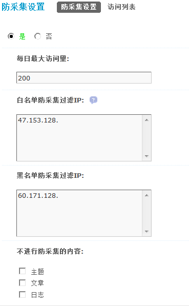

防采集设置
站长有时会遇到站点内容被其他网站利用采集工具非法采集并填充到其他网站的情况，以致自己的利益被损害，在 Discuz! X3 中，添加了防采集功能来防止站点内容被非法采集。
操作路径【后台管理】=>【全局】=>【防采集设置】
一、防采集设置
每日最大访问量：设置独立IP每日最大访问次数，推荐值200
白名单防采集过滤IP：当用户处于本列表中的 IP 地址时，可无限次数访问，不进行防采集过滤。每个 IP 一行，既可输入完整地址，也可只输入 IP 开头，例如 “192.168.”(不含引号) 可匹配 192.168.0.0～192.168.255.255范围内的所有地址，留空为不设置。
黑名单防采集过滤IP：当用户处于本列表中的 IP 地址时，全部进行防采集过滤。
注意：当IP同时存在于黑/白名单时，白名单优先。
不进行防采集的内容：站长可以选择不进行防采集的内容，包括主题、文章和日志。
二、访问列表
会列出所有访问该站的 IP 地址、访问次数以及操作明细，可以在这里把某个IP 加入黑名单或者加入白名单。